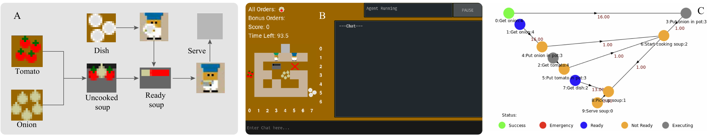
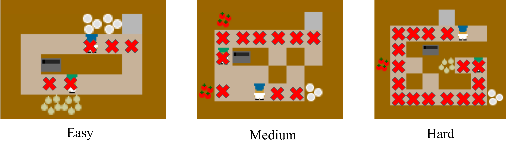
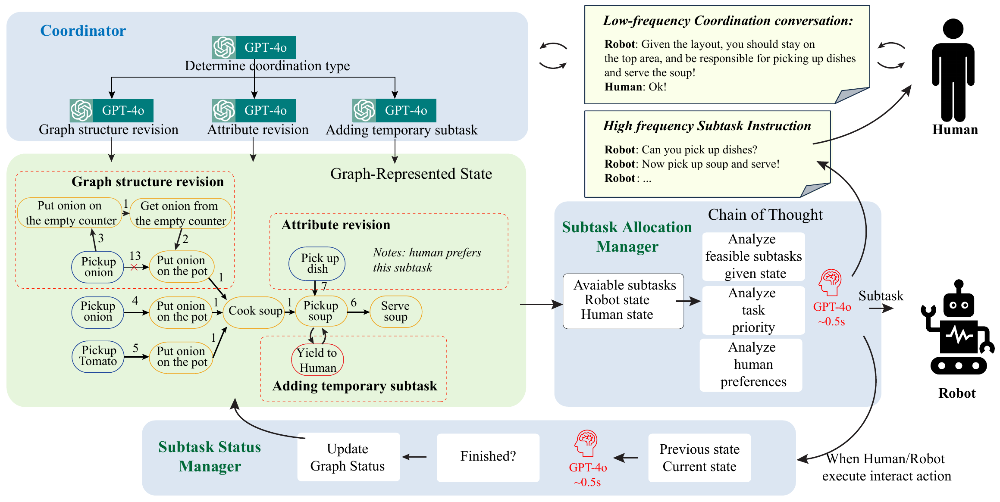
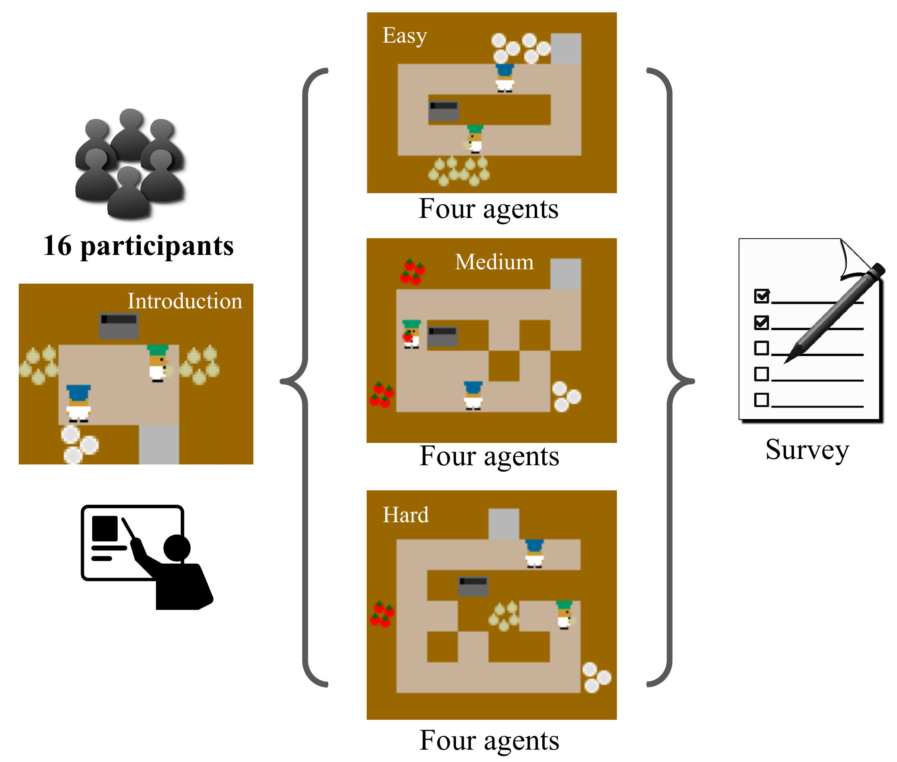
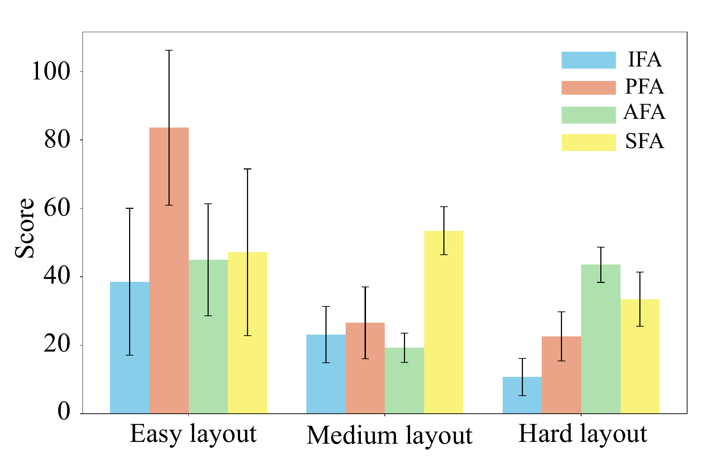
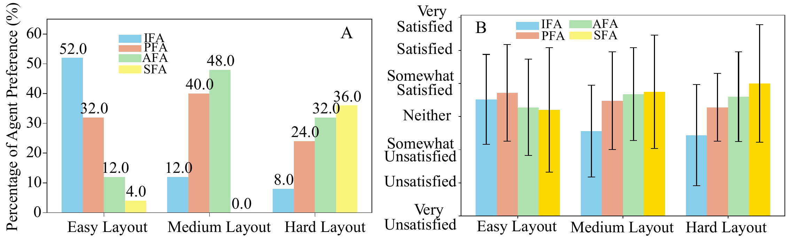
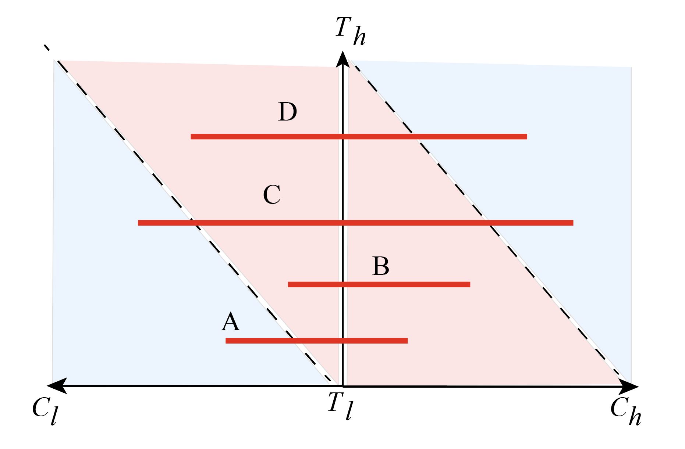

Leveraging the strong communication capabilities of Large Language Models (LLMs) as foundation models, our framework implements a dual-module architecture with a DAG (Directed Acyclic Graph) structure: a Coordinator that provides high-level, low-frequency strategic guidance, and a Manager that delivers subtask-specific, high-frequency instructions. This design enables both passive and active interaction modes, allowing robotic agents to seamlessly transition between supportive and directive roles based on real-time assessment of human needs and task demands.

HRT-PR interface based on Overcooked AI environmentWe built our system on top of the original Overcooked AI environment, which provides an ideal testbed for studying human-robot collaboration as it requires coordination, task division, and real-time communication—key elements of effective teaming.

Different game layouts used in our experimentsOur framework supports three different agent interaction styles:

Overview of different agent modes and their characteristicsThe human player controls the blue hat agent, while the AI agent (red hat) adapts its communication frequency and strategy based on the HRT-PR framework.

Survey design and participant feedback collection methodology
Experimental results showing the relationship between task complexity and optimal communication frequency
Detailed analysis of performance metrics across different agent modes and task complexitiesOur results reveal a nuanced relationship between task complexity, human capabilities, and optimal robot communication strategies. As task complexity increases relative to human capabilities, human teammates demonstrate a stronger preference for robots that offer frequent, proactive support.
However, we identify a critical threshold: when task complexities exceed the LLM's capacity, superactive robotic agents can generate noisy and inaccurate feedback that hinders team performance.
Based on our experimental results, we identify four key cases that determine optimal robot communication strategies:

Four cases of task complexity (Th) vs. agent capability (Cl) and human capability (Ch)Th < Cl, Th < Ch
Th > Cl, Th < Ch
Th < Cl, Th > Ch
Th > Cl, Th > Ch